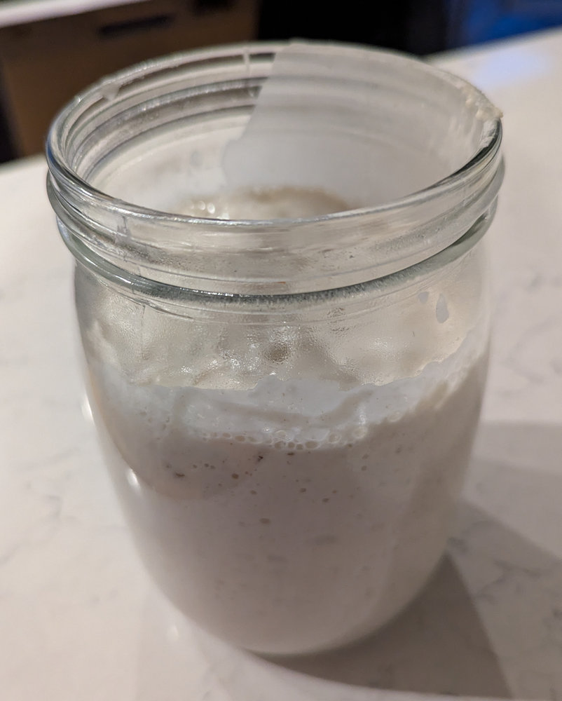

Beginner Sourdough Starter
 Makes approx. 236g (1 cup)
Makes approx. 236g (1 cup) 7–14 days
7–14 days Source
Source Vegetarian/Vegan
Vegetarian/Vegan
A step-by-step guide to creating a sourdough starter from scratch using just flour, water, and patience.

Day 1: Make the starter
60gwhole wheat flour or strong white bread flour60gwarm water (approx. 29°C / 85°F)
Combine flour and water in a large jar (3/4 L or similar). Mix with a fork until smooth — the texture will be thick and pasty.
Cover with plastic wrap, reusable wax wrap, or a lid. Let rest in a warm spot, ideally 21–24°C / 70–75°F, for 24 hours.
Temperature matters. If it’s too cold, the starter won’t rise and the process will take longer. A useful trick: place the jar on a cookie sheet inside an off oven with just the light on for 1–2 hours. Don’t leave it overnight — it’ll get too warm. A proofing box or microwave with the door slightly ajar and the light on also works.
Day 2: Check for bubbles
Check the surface for small bubbles — these indicate fermentation is underway. If you don’t see anything, that’s fine. Bubbles may have appeared and dissolved overnight.
You don’t need to do anything else today. Stir once or twice to oxygenate the mixture, then let it rest for another 24 hours.
A dark liquid may appear on the surface or throughout the culture. This is called “hooch” — it smells strongly of rubbing alcohol or smelly socks and means the starter is hungry. It’s normal. Any time you see it, pour it off (along with any discoloured starter) before feeding.
Days 3–7: Feed the starter
Whether or not bubbles are visible, it’s time to start daily feedings. The goal is to gradually build the starter to about 236g (1 cup) over the course of the week.
Establish a consistent feeding time each day — mornings work well. Use a rubber band or piece of tape on the jar to track how much the starter rises. Scrape down the sides with a small rubber spatula to prevent mould forming.
60gwhite bread flour (per feeding, Days 3–7)60gwarm water (per feeding, Days 3–7)
Day 3: Discard half (60g) of the starter. Add 60g flour + 60g water. Mix until smooth and scrape down the sides — the texture should resemble thick pancake batter or plain yogurt. Cover and rest at 21–24°C for 24 hours. Total yield: 180g.
Day 4: Discard half (90g). Add 60g flour + 60g water. Mix and scrape. Cover and rest 24 hours. Total yield: 210g.
Day 5: Discard half (105g). Add 60g flour + 60g water. Mix and scrape. Cover and rest 24 hours. Total yield: 225g.
Day 6: Discard half (112g). Add 60g flour + 60g water. Mix and scrape. Cover and rest 24 hours. Total yield: approx. 232g.
Day 7: Discard half (116g). Add 60g flour + 60g water. Mix and scrape. Cover and rest 24 hours. Total yield: approx. 236g.
It’s normal for the starter to seem less active on Days 3–4 after switching from whole wheat to all-purpose flour. The yeast needs time to adjust. Keep going.
Day 8: Is it ready?
By now, the starter should have doubled in size with plenty of bubbles — large and small — throughout. The texture will be spongy and fluffy, similar to roasted marshmallow. It should smell pleasant, not like socks.
If those conditions are met, the starter is active and ready to use. Transfer to a clean jar if the current one needs a wash.
To confirm it’s ready, do the float test: feed the starter, wait for it to double, then drop a teaspoon into a glass of water. If it floats, it’s ready.
If the starter hasn’t doubled by Day 8, which is common when temperatures are too low, switch to feeding every 8–12 hours (not every 24). Continue the same formula: discard half, add 60g flour + 60g water. Keep the temperature at 21–24°C. It can take up to two weeks or more — be patient.
Storage: If you bake several times a week, store at room temperature and feed 1–2 times a day. If you bake less often, store in the fridge and feed about once a week — no need to bring it to room temperature first, just feed it and return it to the fridge. Before baking, feed at room temperature to wake it back up.
On “equal parts” flour and water: The recipe feeds by equal weight (60g flour, 60g water), not equal volume — 60g flour is about 1/2 cup, while 60g water is about 1/4 cup. That’s not a typo. Flour is light and airy; water is dense. Their weights match even though their cup measures don’t.
On discard: Early-stage discard (Days 1–7) tends to smell off and look unpleasant. Best to skip using it until the starter is fully established.